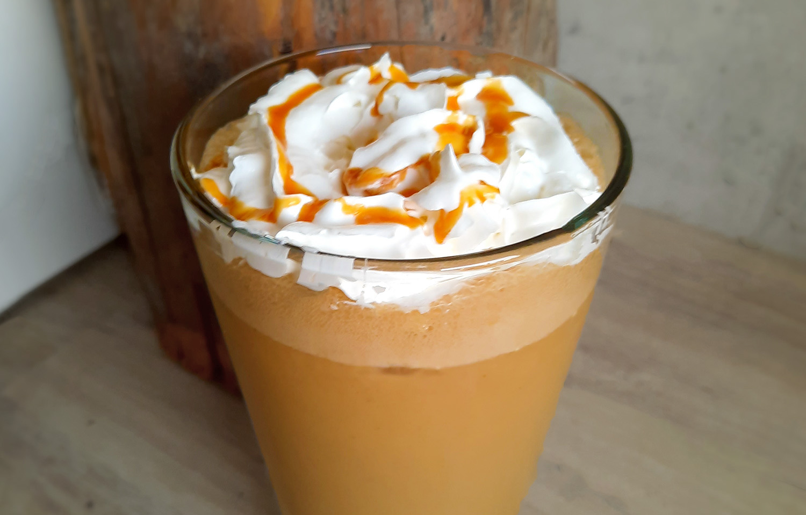

ijskoffie
Lekker op zomerse dagen.

Bereidingsduur: 5 minuten
Aantal personen: 2
Ingrediënten:
250 ml koffie
2 stuks banaan
250 ml havermelk
4 bolletjes vanille-ijs
10 ijsklontjes
naar smaak (vegan) slagroom
naar smaak karamelsaus
250 ml koffie
2 stuks banaan
250 ml havermelk
4 bolletjes vanille-ijs
10 ijsklontjes
naar smaak (vegan) slagroom
naar smaak karamelsaus
Instructies:
1. Zet koffie en laat deze afkoelen.
2. Doe deze daarna samen met de banaan, havermelk, vanille-ijs en ijsklontjes in de blender tot een goede mix.
3. Schenk in een longdrinkglas en top af met slagroom en karamelsaus naar smaak.
1. Zet koffie en laat deze afkoelen.
2. Doe deze daarna samen met de banaan, havermelk, vanille-ijs en ijsklontjes in de blender tot een goede mix.
3. Schenk in een longdrinkglas en top af met slagroom en karamelsaus naar smaak.